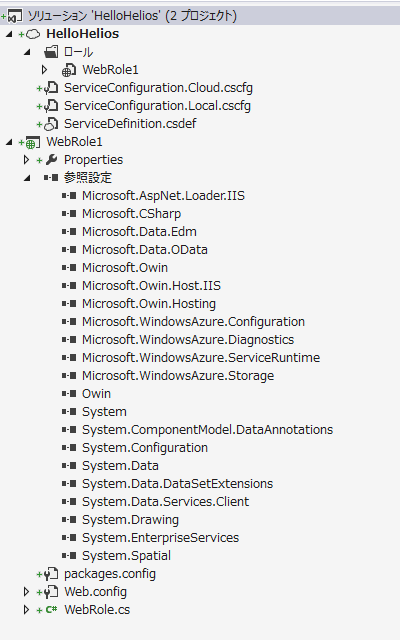
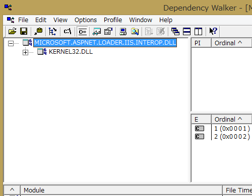
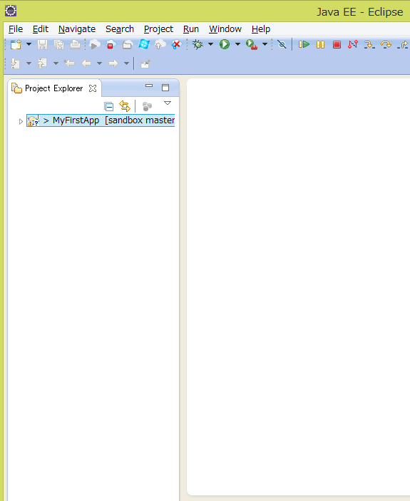
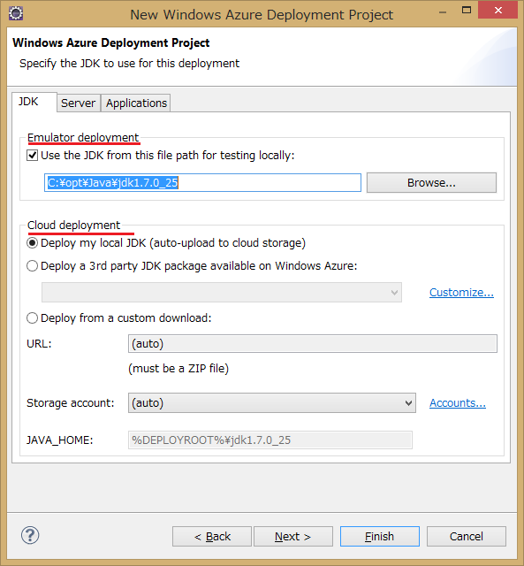
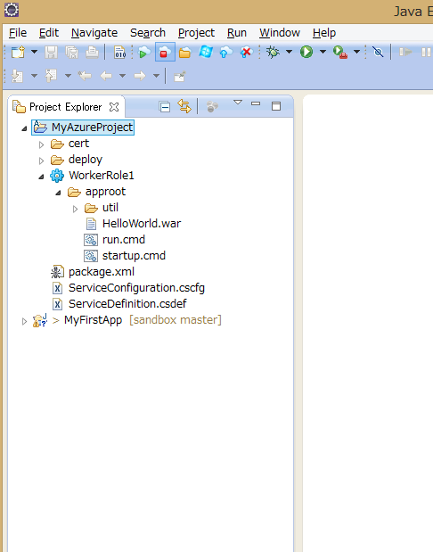
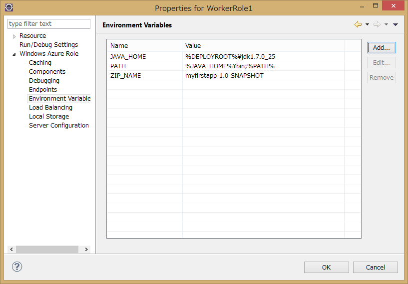
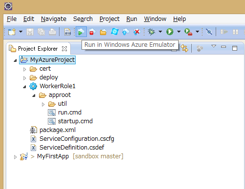
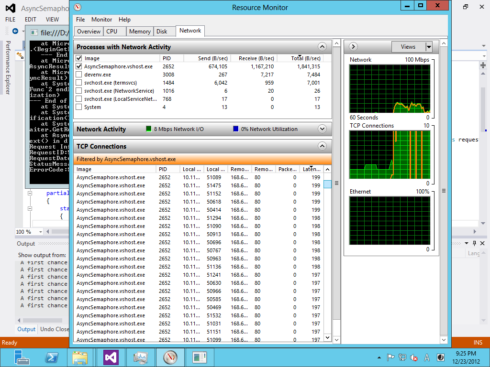
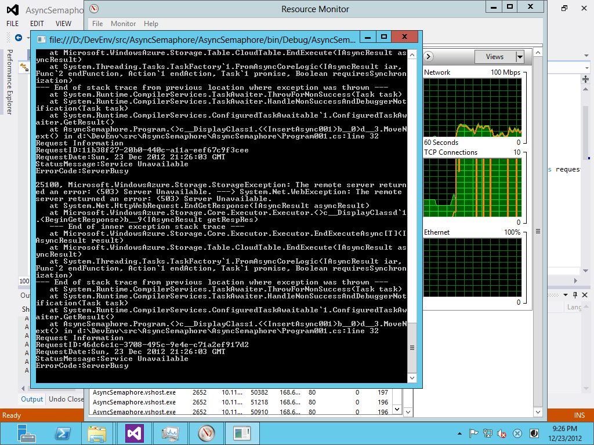

Windows Azure Storage 2013-08-15 の Minute Metrics
Windows Azure Advent Calendar 2013 - Qiita [キータ] の 5 日目の記事です。最初Javaネタを書こうと思ってたのですが、11/27にWindows Azure Storageの新しいバージョン(x-ms-version:2013-08-15)が公開され盛り上がっているのでストレージネタに切り替えました。
新バージョンに付いては以前に書いているので、それを見て下さい。
Windows Azure Storage Team Blog で、新しいWindows Azure Storageのリリースが紹介されています。Windows Azure Storage Release - Introducing CORS, JSON, Minute Metrics, and More
立派な訳が出てるので、こちらも合わせてどうぞ。
2013/11/30 翻訳が出ました。S/N RATIO BY SATO NAOKI Windows Azureストレージのリリース – CORS、JSON、分単位メトリックなど2013/12/20 Windows Azure Japan Team Blog 公式 谷訳出ました。 Windows Azure ストレージのリリース - CORS、JSON、分単位メトリックなど各種機能の導入
久しぶりのストレージ のリリースで機能盛り沢山なのですが [1] 、その中でもパフォーマンスジャンキー注目の Minute Metrics （分単位メトリックス）を紹介します。機能紹介だけだと面白くないので脱線しながら書きますのでお楽しみ下さい。

Minute Metrics （分単位メトリックス）とは
今まで、Windows Azure StorageのMetricsは時間集計でした。 Storage Analytics Metrics の詳細 新しい 2013-08-15 version のMinute Metrics では、5分以内に 分単位の集計（Minute Metrics） が参照できるようになりました。それに伴って下記のテーブルが追加されています。
- $MetricsHourPrimaryTransactionsBlob
- $MetricsHourPrimaryTransactionsTable
- $MetricsHourPrimaryTransactionsQueue
- $MetricsMinutePrimaryTransactionsBlob
- $MetricsMinutePrimaryTransactionsTable
- $MetricsMinutePrimaryTransactionsQueue
Hourと付いているのは、以前の $MetricsTransactionsBlob、$MetricsTransactionsTable、$MetricsTransactionsQueue の名前が変わったものです。古い名前のものもありますが、Minute Metrics の導入に伴って命名規則が整理されたようです。今のところ Windows Azure Portal では分単位の設定はできませんが、将来サポートされるそうです。
名前を見ていて面白いのは、Primary という文字列が入っていることです。もしかしたら、GEO replication 先のメトリックスも見れるようになるんじゃないかと思って、「$MetricsMinuteSecondaryTransactionsTable」って名前でテーブルを参照してみました。
エラーには成らなかったのですが、下記のようなレスポンスでTableは空のようです。 [2]
HTTP/1.1 200 OK
Cache-Control: no-cache
Transfer-Encoding: chunked
Content-Type: application/json;odata=minimalmetadata;streaming=true;charset=utf-8
Server: Windows-Azure-Table/1.0 Microsoft-HTTPAPI/2.0
x-ms-request-id: 9e39e71e-70ea-41b3-be3e-b7a6231315b0
x-ms-version: 2013-08-15
X-Content-Type-Options: nosniff
Date: Thu, 05 Dec 2013 12:00:39 GMT
83
{"odata.metadata":"http://waac2013omi001diag.table.core.windows.net/$metadata#$MetricsMinuteSecondaryTransactionsTable","value":[]}
0
ちなみに、$で始まる適当な名前でリクエストを流すと400 Bad Requestで、リソースに不正な文字が含まれているというエラーになります。
HTTP/1.1 400 Bad Request
Transfer-Encoding: chunked
Content-Type: application/json;odata=minimalmetadata;streaming=true;charset=utf-8
Server: Windows-Azure-Table/1.0 Microsoft-HTTPAPI/2.0
x-ms-request-id: 272dce2f-ac46-46b7-b59d-b0338cefa78b
x-ms-version: 2013-08-15
X-Content-Type-Options: nosniff
Date: Thu, 05 Dec 2013 11:57:59 GMT
DE
{"odata.error":{"code":"InvalidResourceName","message":{"lang":"en-US","value":"The specifed resource name contains invalid characters.\nRequestId:272dce2f-ac46-46b7-b59d-b0338cefa78b\nTime:2013-12-05T11:58:00.5348125Z"}}}
0
メトリックス系のテーブルは下記のようにListTableでも帰ってこないので存在するかどうかは難しいところですが、エラーにならないところを見ると特別扱いされているようで期待してしまいます。
var tables = tableClient.ListTables("$Metrics");
Minute Metrics （分単位メトリックス）を有効にする
Minute Metricsを有効にするには、xms-version:2013-08-15 を指定して、Set Service Properties REST APIを使います。今回は、 Widnows Azure Storage Client 3.0.0 を使います。今のところ Widnows Azure Storage Client 3.0.0 のドキュメントがほぼ存在しないのですが、nugetで入れるとデフォルトでは入ります。 設定は、ServiceProperties に、Version、MetricsLevel、RetentionDays（保存期間）を入れて、CreateCloud(Blob|Table|Queue)ClientのSetServicePropertiesを呼ぶだけです、簡単ですね。 下記のコードだと、Loggingと時間集計メトリックスの設定も同時にやっています。Minute MetricsのRetentionの期間は従来と同じで日付なのでデータ量には要注意です。従来の時間単位集計に比べて60倍のデータが蓄積されます。 [3]
private static void SetStorageAnalytics(CloudStorageAccount account)
{
var serviceProperty = new ServiceProperties
{
Logging = new LoggingProperties
{
Version = "1.0",
LoggingOperations = LoggingOperations.All,
RetentionDays = 7,
},
HourMetrics = new MetricsProperties
{
Version = "1.0",
MetricsLevel = MetricsLevel.ServiceAndApi,
RetentionDays = 7
},
MinuteMetrics = new MetricsProperties
{
Version = "1.0",
MetricsLevel = MetricsLevel.ServiceAndApi,
RetentionDays = 1
}
};
account.CreateCloudBlobClient().SetServiceProperties(serviceProperty);
account.CreateCloudTableClient().SetServiceProperties(serviceProperty);
account.CreateCloudQueueClient().SetServiceProperties(serviceProperty);
}
このコード書いていてServicePropertiesのプロパティで「あれ？」と思いました。以前は、ServicePropertiesは、LoggingProperties と MetricsProperties の２つのプロパティを持っていたのですが、3.0では MetricsProperties が無くなって HourMetrics になってしまっているようです、Table側は古い名前も残してあるのに、ライブラリは Braking Changesにしてしまったようですね。このあたりの判断は難しいところなのでしょうが、古い名前もあっても良い気がします。
nugetから無条件で最新版として入るのに前のバージョンと互換性が無いっていうのは大胆な気がしますが、なんらかの事情でちょっとドキュメントが遅れているだけなのでしょう。
実行してリクエスト、レスポンスを覗いてみます。
http request
PUT http://waac2013omi001diag.blob.core.windows.net/?comp=properties&restype=service&timeout=90 HTTP/1.1
User-Agent: WA-Storage/3.0.0 (.NET CLR 4.0.30319.34003; Win32NT 6.3.9600.0)
x-ms-version: 2013-08-15
x-ms-client-request-id: 56bffee5-4626-4835-b254-af38a1520242
x-ms-date: Thu, 05 Dec 2013 12:39:54 GMT
Authorization: SharedKey ********************************************************
Host: waac2013omi001diag.blob.core.windows.net
Content-Length: 626
Connection: Keep-Alive
<?xml version="1.0" encoding="utf-8"?><StorageServiceProperties><Logging><Version>1.0</Version><Delete>true</Delete><Read>true</Read><Write>true</Write><RetentionPolicy><Enabled>true</Enabled><Days>7</Days></RetentionPolicy></Logging><HourMetrics><Version>1.0</Version><Enabled>true</Enabled><RetentionPolicy><Enabled>true</Enabled><Days>7</Days></RetentionPolicy><IncludeAPIs>true</IncludeAPIs></HourMetrics><MinuteMetrics><Version>1.0</Version><Enabled>true</Enabled><RetentionPolicy><Enabled>true</Enabled><Days>1</Days></RetentionPolicy><IncludeAPIs>true</IncludeAPIs></MinuteMetrics><Cors /></StorageServiceProperties>
http response
HTTP/1.1 202 Accepted
Transfer-Encoding: chunked
Server: Windows-Azure-Blob/1.0 Microsoft-HTTPAPI/2.0
x-ms-request-id: 650e2253-9e51-43e5-90bd-6077ef43ef31
x-ms-version: 2013-08-15
Date: Thu, 05 Dec 2013 12:39:47 GMT
0
リクエストで、ServicePropertiesに設定した内容を投げていますがXMLなんですね。ここはJSONじゃないのかと思ったけど、そんなにトラフィックが多いところじゃないので問題ないですね。シンプルでいい感じです。
Minute Metrics （分単位メトリックス）の結果
細かい確認ができていないのですが、結果自体はテーブル名が違うだけで従来の時間集計と同じものが出てるようです。パーテションキーが単位で採番されています。
| PartitionKey | RowKey | TotalIngress | TotalEgress | AverageE2ELatency | AverageServerLatency |
|---|---|---|---|---|---|
| 20131205T0303 | user;All | 393 | 59079 | 352 | 53 |
| 20131205T0303 | user;QueryEntities | 393 | 59079 | 352 | 53 |
| 20131205T0304 | system;All | 8057 | 9452 | 20 | 19 |
| 20131205T0304 | user;All | 2188 | 15747 | 46.833333 | 5.166667 |
| 20131205T0304 | user;QueryEntities | 1478 | 14291 | 68.5 | 6.25 |
| 20131205T0304 | user;QueryTables | 710 | 1456 | 3.5 | 3 |
| 20131205T0305 | system;All | 24161 | 28398 | 14.333333 | 13.333333 |
| 20131205T0305 | user;All | 2041 | 13787 | 268.5 | 5.75 |
| 20131205T0305 | user;GetTableServiceProperties | 338 | 584 | 2 | 2 |
| 20131205T0305 | user;QueryEntities | 1703 | 13203 | 357.333333 | 7 |
| 20131205T0306 | system;All | 32239 | 37972 | 17.25 | 16 |
| 20131205T0307 | system;All | 23475 | 27904 | 15 | 14.5 |
まとめ
Minute Metrics は出てくるまで少々遅延(5分ぐらい？)があるようですが、分単位のメトリックスが見れるのは助かります。簡単な負荷テストの結果を確認するのにも使えます。 今回はStorage Clinet 3.0を使いましたが、現時点ではGitHubにコードが出ていない、変更点のドキュメントが無いなど少々使いづらいところがあります。もし新機能にこだわりが無いなら、あの嫌らしいCastのBUGも治ってますし2.1.0.4 を使うのが良いと思います。今回のように、Minute Metricsの設定がしたいというなら、Storage Clinet 3.0 が必要です。あと、ServicePropertiesに、CorsPropertiesが追加されているので、CROS が使いたい場合も3.0が便利だと思います。
訂正 2013/12/06
訂正です。Storage Clinet 3.0は、現時点ではGitHubにコードが出ていないと書きましたが、正式名称 Windows Azure Storage Libraries for .NET のソースは github:azure-storage-net で公開されています。
| [1] | 日本リージョン、IaaSのGAなど大きな話題が続いている Azure 全体に比べると地味ですね。 |
| [2] | レスポンスのbodyがJSONですね、このバージョンからJSONがサポートされています。 |
| [3] | 当たり前ですね |
Windows Azure SDK for Ruby Release 0.6.0
Windows Azure SDK for Ruby 0.6.0 がリリースされました。2013/04/25に 0.5.0 が出て以来7ヶ月ぶりのリリースです。 RubyGemsから入ります
INISTALL > gem install azure
新機能
0.6.0では、主にmanagement APIの追加とBUG修正が行われたようです。
- service management API のライブラリとして下記のものが追加されています。
- Virtual Machine
- Virtual Machine Image
- Virtual Network
- Cloud Service
- Storage
- Sql Database
- Location and Affinity Group
get_blob_properties のBUG修正
5月にPRを出した修正 も取り込まれてリリースされました。 これで、Blobのプロパティを取ったらBodyが付いてくるという大きな問題は解決されたことになります。
これで出すに出せなかったやつが出せるようになります。
Storage Client 2.1.0.4 以降での Cast問題の修正
Storage Client 2.0.3以前と、最新のWindows Azure Storage の組み合わせで発生していた Table Query での Cast 問題 が最新(2.1.0.4, 3.0.0 2013/11/29 現在)では解決されているようです。正式なアナウンスはまだ有りませんが、必要な方は以下の検証結果を参考にしてください。

issueの再現
まずは、問題が報告されているStorage Clinet 2.1.0.3で再現することを確認します。再現コードは Table Query での Cast 問題 で提示されているものを使います。
static IEnumerable<T> GetEntities<T>(CloudTable table) where T : ITableEntity, new()
{
IQueryable<T> query = table.CreateQuery<T>().Where(x => x.PartitionKey == "1");
return query.ToList();
}
nugetで、問題のあるバージョンのライブラリをインストールします:
Install-Package WindowsAzure.Storage -Version 2.1.0.3
実行結果
Table Query での Cast 問題 で報告されている通り、http requestのtraceのGET URLに$filter=castの文字列が入ってしまっており、http responseのtraceでは、400 Bad Requestになっているのが確認できました。 x-ms-versionは、 2012-02-12 です。
http requestのtrace:
GET http://asdpojasldfj001.table.core.windows.net/people?$filter=cast%28%27%27%29%2FPartitionKey%20eq%20%271%27&timeout=90 HTTP/1.1
User-Agent: WA-Storage/2.1.0.3 (.NET CLR 4.0.30319.34003; Win32NT 6.3.9600.0)
x-ms-version: 2012-02-12
Accept: application/atom+xml,application/xml
Accept-Charset: UTF-8
MaxDataServiceVersion: 2.0;NetFx
x-ms-client-request-id: af7cf5c3-c287-4c1f-a9fe-ee0b6c374317
x-ms-date: Fri, 29 Nov 2013 23:25:01 GMT
Authorization: SharedKey asdpojasldfj001:*********************************************
Host: asdpojasldfj001.table.core.windows.net
http responseのtrace:
HTTP/1.1 400 Bad Request
Transfer-Encoding: chunked
Content-Type: application/xml;charset=utf-8
Server: Windows-Azure-Table/1.0 Microsoft-HTTPAPI/2.0
x-ms-request-id: abf14b12-7a80-4b75-a652-604c56bdb817
x-ms-version: 2012-02-12
X-Content-Type-Options: nosniff
Date: Fri, 29 Nov 2013 23:25:01 GMT
131
<?xml version="1.0" encoding="utf-8"?><error xmlns="http://schemas.microsoft.com/ado/2007/08/dataservices/metadata"><code>InvalidInput</code><message xml:lang="en-US">One of the request inputs is not valid.
RequestId:abf14b12-7a80-4b75-a652-604c56bdb817
Time:2013-11-29T23:25:02.0389849Z</message></error>
0
2.1.0.4 での修正確認
nugetの履歴によると nuget.org: Windows Azure Storage 2013/11/27 に、2.1.0.4と、3.0.0が同時にリリースされています。 同じコードをライブラリのバージョンだけ変更して実行します:
Install-Package WindowsAzure.Storage -Version 2.1.0.4
実行結果
GET URLがスッキリして、結果は 200 OK が帰ってきています。FIXされているようです。
http requestのtrace:
GET http://asdpojasldfj001.table.core.windows.net/people?$filter=PartitionKey%20eq%20%271%27&timeout=90 HTTP/1.1
User-Agent: WA-Storage/2.1.0.4 (.NET CLR 4.0.30319.34003; Win32NT 6.3.9600.0)
x-ms-version: 2012-02-12
Accept: application/atom+xml,application/xml
Accept-Charset: UTF-8
MaxDataServiceVersion: 2.0;NetFx
x-ms-client-request-id: e9319d53-b9eb-41c6-9a93-63566842984e
x-ms-date: Fri, 29 Nov 2013 23:33:17 GMT
Authorization: SharedKey asdpojasldfj001:*********************************************
Host: asdpojasldfj001.table.core.windows.net
http responseのtrace:
HTTP/1.1 200 OK
Cache-Control: no-cache
Transfer-Encoding: chunked
Content-Type: application/atom+xml;type=feed;charset=utf-8
Server: Windows-Azure-Table/1.0 Microsoft-HTTPAPI/2.0
x-ms-request-id: d1056e7a-f0ff-4ab4-b5a4-4b546eb48515
x-ms-version: 2012-02-12
X-Content-Type-Options: nosniff
Date: Fri, 29 Nov 2013 23:33:17 GMT
96A
<?xml version="1.0" encoding="utf-8"?><feed xml:base="http://asdpojasldfj001.table.core.windows.net/" xmlns="http://www.w3.org/2005/Atom" xmlns:d="http://schemas.microsoft.com/ado/2007/08/dataservices" xmlns:m="http://schemas.microsoft.com/ado/2007/08/dataservices/metadata"><id>http://asdpojasldfj001.table.core.windows.net/people</id><title type="text">people</title><updated>2013-11-29T23:33:18Z</updated><link rel="self" title="people" href="people" /><entry m:etag="W/"datetime'2013-11-28T10%3A24%3A23.5715047Z'""><id>http://asdpojasldfj001.table.core.windows.net/people(PartitionKey='1',RowKey='1')</id><category term="asdpojasldfj001.people" scheme="http://schemas.microsoft.com/ado/2007/08/dataservices/scheme" /><link rel="edit" title="people" href="people(PartitionKey='1',RowKey='1')" /><title /><updated>2013-11-29T23:33:18Z</updated><author><name /></author><content type="application/xml"><m:properties><d:PartitionKey>1</d:PartitionKey><d:RowKey>1</d:RowKey><d:Timestamp m:type="Edm.DateTime">2013-11-28T10:24:23.5715047Z</d:Timestamp><d:Data>foo</d:Data></m:properties></content></entry><entry m:etag="W/"datetime'2013-11-28T10%3A21%3A02.0298712Z'""><id>http://asdpojasldfj001.table.core.windows.net/people(PartitionKey='1',RowKey='2')</id><category term="asdpojasldfj001.people" scheme="http://schemas.microsoft.com/ado/2007/08/dataservices/scheme" /><link rel="edit" title="people" href="people(PartitionKey='1',RowKey='2')" /><title /><updated>2013-11-29T23:33:18Z</updated><author><name /></author><content type="application/xml"><m:properties><d:PartitionKey>1</d:PartitionKey><d:RowKey>2</d:RowKey><d:Timestamp m:type="Edm.DateTime">2013-11-28T10:21:02.0298712Z</d:Timestamp><d:Data>foo</d:Data></m:properties></content></entry><entry m:etag="W/"datetime'2013-11-29T23%3A16%3A04.1332012Z'""><id>http://asdpojasldfj001.table.core.windows.net/people(PartitionKey='1',RowKey='3')</id><category term="asdpojasldfj001.people" scheme="http://schemas.microsoft.com/ado/2007/08/dataservices/scheme" /><link rel="edit" title="people" href="people(PartitionKey='1',RowKey='3')" /><title /><updated>2013-11-29T23:33:18Z</updated><author><name /></author><content type="application/xml"><m:properties><d:PartitionKey>1</d:PartitionKey><d:RowKey>3</d:RowKey><d:Timestamp m:type="Edm.DateTime">2013-11-29T23:16:04.1332012Z</d:Timestamp><d:Data>foo</d:Data></m:properties></content></entry></feed>
0
おまけの 3.0.0 での修正確認
同じことを最新の 3.0.0 でやりました。バッチリ動きます。x-ms-versionが 2013-08-15になって結果がjsonになっています:
Install-Package WindowsAzure.Storage -Version 2.1.0.4
http requestのtrace:
GET http://asdpojasldfj001.table.core.windows.net/people?$filter=PartitionKey%20eq%20%271%27&timeout=90 HTTP/1.1
User-Agent: WA-Storage/3.0.0 (.NET CLR 4.0.30319.34003; Win32NT 6.3.9600.0)
x-ms-version: 2013-08-15
Accept-Charset: UTF-8
MaxDataServiceVersion: 3.0;NetFx
Accept: application/json;odata=minimalmetadata
x-ms-client-request-id: 5b6e366f-dde8-4ec0-b433-10fac62c117d
x-ms-date: Fri, 29 Nov 2013 23:17:23 GMT
Authorization: SharedKey asdpojasldfj001:*********************************************
Host: asdpojasldfj001.table.core.windows.net
http responseのtrace:
HTTP/1.1 200 OK
Cache-Control: no-cache
Transfer-Encoding: chunked
Content-Type: application/json;odata=minimalmetadata;streaming=true;charset=utf-8
Server: Windows-Azure-Table/1.0 Microsoft-HTTPAPI/2.0
x-ms-request-id: fa6db02e-b080-4bc4-8761-1016920fb1b0
x-ms-version: 2013-08-15
X-Content-Type-Options: nosniff
Date: Fri, 29 Nov 2013 23:17:22 GMT
168
{"odata.metadata":"http://asdpojasldfj001.table.core.windows.net/$metadata#people","value":[{"PartitionKey":"1","RowKey":"1","Timestamp":"2013-11-28T10:24:23.5715047Z","Data":"foo"},{"PartitionKey":"1","RowKey":"2","Timestamp":"2013-11-28T10:21:02.0298712Z","Data":"foo"},{"PartitionKey":"1","RowKey":"3","Timestamp":"2013-11-29T23:16:04.1332012Z","Data":"foo"}]}
0
ソースコード上の修正点
2.1.0.4はgithub上でコードが公開されているので、レポジトリ上の修正点を確認しましょう。
ChangeLog では:
Issues fixed in 2.1.0.4 :
- Tables: Do not send the cast operator in the table query filter string.
microsoft-azure-api/Services/Storage/Lib/Common/Table/Queryable/ExpressionWriter.cs で、2.1でExpressionをURLに展開するときのUnaryの処理にcastを使ってしまっていたのを削除したようです。
修正のCommitは、 XSCL 2.1.0.4 - Hotfix で、ソースは、 ExpressionWriter.cs です。
残念ながら、3.0.0は、まだコードが公開されていないので確認することができません。
まとめ
2.1.0.4/3.0.0では、Table Query での Cast 問題 の問題はFIXされています。そのうちアナウンスは出ると思いますが、必要な場合は試してみてください。Windows Azure Storage Known Issues 2013/11 で報告されていた幾つかの問題の中で、Cast問題はスマートに回避するのが難しいものだったので、これで解決されて助かります。これ以外のものはどちらということ利用者側のコードに問題がある場合に起きる問題な気がします。
本題とは外れますが、今回の場合では、363 byte(json) と、2,436 byte (xml)とhttp responseのbodyのサイズが大きく違い期待以上に良好な結果になっています。今回はデータが非常に小さいのでmeta 情報部分が冗長なxmlのオーバーヘッドが目立つ結果になっているのでしょうが、それにしても大きな違いです。
Windows Azure Storage Release - CORS、JSON、Minute Metrics の紹介
Windows Azure Storage Team Blog で、新しいWindows Azure Storageのリリースが紹介されています。 Windows Azure Storage Release - Introducing CORS, JSON, Minute Metrics, and More
2013/11/30 翻訳が出ました。S/N RATIO BY SATO NAOKI Windows Azureストレージのリリース – CORS、JSON、分単位メトリックなど2013/12/20 Windows Azure Japan Team Blog 公式 谷訳出ました。 Windows Azure ストレージのリリース - CORS、JSON、分単位メトリックなど各種機能の導入
以下に抜粋で内容を紹介します。
3つの主要な機能
CORS (Cross Origin Resource Sharing): Windows Azure Blobs, Tables, Queues でCORS が有効できるようにになった。これによって、browser から異なったドメインのリソースへのアクセス・操作ができる。 CORS は、Service Properties の 設定で有効化。詳しくは http://msdn.microsoft.com/en-us/library/windowsazure/dn535601.aspx を参照してください。
JSON (JavaScript Object Notation): 現在、Windows Azure Table は、 OData 3.0 の JSON format をサポートしている。JSON format では、AtomPub XML payloadの冗長な部分が削減されより効率的な転送になる。
JSONは下記3つの形式でサポート
- No Metadata - これは最も効率的なformatで、クライアントがカスタムプロパティのデータ型を知っている場合に便利です
- Minimal Metadata - この形式は、暗黙的に解釈できない特定の種類のカスタムプロパティのデータ型情報が含まれている。例えば、Azure Table Browserのような、一般的なツールのように保存されているEntityのデータ型を知らないで読まなければいけない場合に便利です
- Full Metadata - このフォーマットは、 generic OData readers で読む場合に便利です
Windows Azure TableのJSONについての詳細情報は http://msdn.microsoft.com/en-us/library/windowsazure/dn535600.aspx を参照してださい。
Windows Azure Storage Analytics の Minute Metrics: 今まで、Windows Azure StorageのMetricsは時間集計でした。（ Storage Analytics Metrics の詳細 ） 新しい 2013-08-15 version では、 いくつかの主要な値に付いて 5分以内に 分集計（Minute Metrics） が取得できるようになります。それに伴って下記のテーブルを追加します。
- $MetricsHourPrimaryTransactionsBlob
- $MetricsHourPrimaryTransactionsTable
- $MetricsHourPrimaryTransactionsQueue
- $MetricsMinutePrimaryTransactionsBlob
- $MetricsMinutePrimaryTransactionsTable
- $MetricsMinutePrimaryTransactionsQueue
時間集計のテーブル名が変わっているので注意してください。古いテーブルも継続して存在します。
分集計の設定は、2013-08-15 version を設定して、Set Service Properties REST APIを使います。現在 Windows Azure Portal では設定ができませんが、将来サポートされる予定です。
詳細情報は、 About Storage Analytics Metrics を見てくだい。
その他の追加機能
これらの他の2013-8-15 versionでは、以下の機能を実装しています。2013-8-15 version の変更詳細のリストは： http://msdn.microsoft.com/en-us/library/windowsazure/dd894041.aspx にあります。
- Copy blob で、Shared Access Signature (SAS) を、コピー先にも適応します。（同じstorage accountの場合）
- Windows Azure Blob service は、Content-Disposition と response headers の cache-control などの ability control (via. SAS）をサポートします。Content-Disposition は、Set Blob Properties で設定します。
- Windows Azure Blob service は、Get Blob と Get Blob Propertiesで、複数の HTTP conditional header をサポートします。この機能は、web-browsers which から CDN servers 経由でアクセスする場合に有用です。
- Windows Azure Blob Service は、uncommitted blobはある状態での、Delete Blob operation をサポートします。以前は、事前にcommitしないとdelete Blob出来ませんでした。
- List Containers, List Blobs と List Queues は、2013-08-15 version から、resourceに、URL address field を含みません。 これは、clientで再構築できる fields を削減したためです。
- Lease Blob と Lease Container は、2013-08-15 version から、ETag と Last Modified Time を response headers で返します。これによって、lease holder は最後に見た時から、リソースが変更されたかどうかを簡単に確認することができます。（つまり、blob や その metadata が更新されたか)。以前と同じくblob の lease operations では、ETagは変更されません。
これらの機能に対応した、Windows Azure Storage Client Library を github:azure-storage-net にリリースします。数ヶ月で、Windows AzureのSDK 2.2、Windows Azure Storage Emulatorのアップデートをリリースする予定です。この更新は、2013-08-15 version の新機能をサポートします。
既知の問題が幾つかあります。下記の記事を参照してください。
http://blogs.msdn.com/b/windowsazurestorage/archive/2013/11/23/windows-azure-storage-known-issues-november-2013.aspx http://blogs.msdn.com/b/windowsazurestorage/archive/2013/11/23/windows-azure-storage-breaking-changes-for-windows-azure-tables-november-2013.aspx
以上
最後に
Azure Storage Client (Windows Azure Storage)は、3.0.0がリリースされています。nugetは nuget:WindowsAzure.Storage Dependenciesを見ると、Microsoft.Data.OData 5.6以上になっているので、既存のコードとコンフリクトするかもしれません、要注意です。 BUILD 2013で話が出てきたStorageの新機能の一部がまだ出てきていないようなので、年末に向けてさらに期待しています。 負荷試験している時とかはMinute Metricsは便利ですね、嬉しいです。
Helios を Azure Cloud Service で使う
2013/12/13 追記 Microsoft.Owin.Host.IIS 0.1.1-pre では、WebRoleのStartup taskの作成 の問題は解決されました。
巷で話題のHeliosをCloud Serviceで使おうとしたらちょっとハマりました。基本的には、 Checking out the Helios IIS Owin Web Server Host と同じですが、Cloud Service、WebRoleの組み合わせでDeployしたら下記のようなエラーになります。

最初、なにかアセンブリが足りないのかと思って、Fusion Logを調べたりしていたのですが、結局Helios内で使っているnavite code dllが依存しているVC12のランタイムが無かったという話でした。startup taskを用意してVC12のランタイムを入れてやると上手く動くようになります。
ここでは、Cloud Serviceの作成から、Heliosの組み込み、startup taskの作成まで一通り説明します。
手順の確認
WebRoleの作成からHeliosのインストールまで
- Cloud Service を作ってWebRoleを追加します 普通にCloudServiceを作成し、WebRoleを追加します。テンプレートはEmptyにします

- projectを、.NET 4.5.1 を使うようにします

コンパイルして問題無いのを確認します。
System.Webの参照を全て削除します
nugetを使って、Microsoft.Owin.Host.IISをインストールします:
Install-Package Microsoft.Owin.Host.IIS -Pre
下記のような参照になります
Startup Classの設定
下記のようなStartup classのコードを追加します:
using System;
using Microsoft.Owin;
using Owin;
[assembly: OwinStartup(typeof(WebRole1.Startup))]
namespace WebRole1
{
public class Startup
{
public void Configuration(IAppBuilder app)
{
app.Run(async context => // IOWinContext
{
context.Response.StatusCode = 200;
context.Response.ContentType = "text/html";
await context.Response.WriteAsync("Hello Herios. Time is: " + DateTime.Now.ToString());
});
}
}
}
これで、WebRoleを動かしてみて、動くことを確認します。
WebRoleのStartup taskの作成
Helios 0.1.0 の中で使われている、unmanaged codeがmsvcr120.dllに依存しているので、動作環境ではVC12 のランタイムが必要です。ここでは、WebRoleのstartup taskでVC12のランタイムをインストールする方法を説明します。

ServiceDefinition.csdefに下記の定義を追加します:
<?xml version="1.0" encoding="utf-8"?>
<ServiceDefinition name="HelloHelios" xmlns="http://schemas.microsoft.com/ServiceHosting/2008/10/ServiceDefinition" schemaVersion="2013-10.2.2">
<WebRole name="WebRole1" vmsize="Small">
<Startup>
<Task commandLine="startup.cmd" executionContext="elevated" taskType="simple" />
</Startup>
<Sites>
以下省略・・・・
WebRoleのプロジェクトに、startup.cmdというbatchファイルとvcredist_x64.exeを追加して、プロパティで出力ディレクトリにコピーするように設定します。
- startup.cmd::
- vcredist_x64.exe /install /quiet
vcredist_x64.exe は、 Visual Studio 2013 の Visual C++ 再頒布可能パッケージ からダウンロードできます。VS 2013をインストールしている場合は、 C:Program Files (x86)Microsoft Visual Studio 12.0VCredist 等のディレクトリにファイルがあります。
startup taskについて： Windows Azure でスタートアップ タスクを実行する
osFamilyの変更
.NET Framework 4.5.1は、Windows Server 2012R2では最初から入っています。簡単なので、osFamilyを4にして.NET Framework 4.5.1を使います。
ServiceConfiguration.(Local|Cloud).cscfgのosFamilyを3から4に変更します:
<?xml version="1.0" encoding="utf-8"?>
<ServiceConfiguration serviceName="HelloHelios" xmlns="http://schemas.microsoft.com/ServiceHosting/2008/10/ServiceConfiguration" osFamily="4" osVersion="*" schemaVersion="2013-10.2.2">
<Role name="WebRole1">
まとめ
Helios 0.1.0 runtimeには、native codeのDLLが含まれている。このDLLは、VC12(VS2013)のランタイム、msvcr120.dllに依存している。msvcr120.dllは、Cloud Service のWindows 2013R2 サーバーに存在しない。 vcredist_x64.exeを使うとmsvcr120.dllがインストールされて問題が解決する。 この問題は、厳密に言うと Microsoft.Owin.Host.IIS 0.1.0-pre が使っている、Microsoft.AspNet.Loader.IIS 0.1.0-pre に起因する。 このままだとちょっと使いづらいですね。
2013/12/13 追記
2013/12/02 Microsoft.Owin.Host.IIS 0.1.1-pre では、 Microsoft.AspNet.Loader.IIS 0.1.1-pre に含まれる。Microsoft.AspNet.Loader.IIS.Interop.dll がMSVCR120.DLLに依存しなくなりました。そのため、 WebRoleのStartup taskの作成 のようなことをしないでも動作します。 これで普通に使えるようになりますね。
Windows Azure Storage Known Issues 2013/11
2013/11/29 以下の内容は正式な日本語訳が出ています Windows Azure ストレージの既知の問題2013/11/30 Table Query での Cast 問題 が解決されたStorage Client Libraryがリリースされています。検証記事 Storage Client 2.1.0.4 以降での Cast問題の修正
cros, json 対応などのmajor releaseの準備に伴って実装が変更されているようです。それが原因でいくつかの意図しない問題が発生していることが報告されています。以下は Windows Azure Storage の Blog Windows Azure Storage Known Issues (November 2013) からの抜粋です。これらの問題が修正されプロダクションに公開され次第 Blog の記事は更新されるということです。
Windows Azure TablesのIssue
下記の2つの既知のissueがあります。サービス側または当社のクライアント·ライブラリの一部としてhotfixを出す予定です。
- clients で、 DataServiceContext.ResolveName を定義し、 <Account Name>.<Table Name> 以外の型の名前を指定すると、CUD operation が 400 (Bad Request) を返します。 これは、新しい実装では、ATOM の “Category” element の term 属性が、<Account Name>.<Table Name> と同じで無ければいけないのが原因です。以前のバージョン（実装）では、送信された型の名前は無視していました。これは再び無視するように修正される予定ですが、それまでの間は次の回避策を検討してください。 ResolveName の設定は、Azure Tables では必要無いのでclient application のから外してください。そうすると OData の “category” element は送信されません。
下記は問題が発生するコードの例です。これを実行するとサーバー側で失敗します。
CloudTableClient cloudTableClient = storageAccount.CreateCloudTableClient();
TableServiceContext tableServiceContext = cloudTableClient.GetDataServiceContext();
tableServiceContext.ResolveName = delegate(Type entityType)
{
// This would cause class name to be sent as the value for term in the category element and service would return Bad Request.
return entityType.FullName;
};
SimpleEntity entity = new SimpleEntity("somePK", "someRK");
tableServiceContext.AddObject("sometable", entity);
tableServiceContext.SaveChanges();
この Issue の解決のためには client 側で tableServiceContext.ResolveName delegate の設定を外してください。
- service updateの一環として、サーバー側で使っている新しい .NET WCF Data Services library は、$filter query の 一部に empty “cast” があると 400 (Bad Request) で拒否します。古い .NET framework libraryではそうではありませんでした。 これによって、Windows Azure Storage Client Library 2.1のIQueryable implementationに影響が出ます。 .NET の DataServiceContext の挙動を、cast を送信しないようにクライアントライブラリを修正中です。これは、数週間以内に利用できるようになります( this should be available in the next couple of weeks ) それまでの間次の回避策を検討してください。このクライアントライブラリの問題では、IEnumerable<T> で ITableEntityインターフェイスに制約するのでは無く、インスタンス化される型を明示的に使うことで回避できます。
下記は問題があるコードです
static IEnumerable<T> GetEntities<T>(CloudTable table) where T : ITableEntity, new()
{
IQueryable<T> query = table.CreateQuery<T>().Where(x => x.PartitionKey == "mypk");
return query.ToList();
}
このように書くと 2.1 storage client library の IQueryable interface は、下記のUriに展開されて新しい service updateでは、400 (Bad Request) で拒否されます
http://myaccount.table.core.windows.net/invalidfiltertable?$filter=cast%28%27%27%29%2FPartitionKey%20eq%20%27mypk%27&timeout=90
コードを下記のように変更してquery の castを取り除いてください。そうすれば、cast operator は送信されません
IQueryable<SimpleEntity> query = table.CreateQuery<SimpleEntity>().Where(x => x.PartitionKey == "mypk");
return query.ToList();
Uri request は下記のようになり、service に受け付けられます
http://myaccount.table.core.windows.net/validfiltertable?$filter=PartitionKey%20eq%20%27mypk%27&timeout=90
We apologize for these issues and we are working on a hotfix to address them. (我々はこれらの問題について謝罪し、我々はそれらに対処するための修正プログラムに取り組んでいます)
感想、コメント等
- 最後の Uriに cast operatorが出てしまって、それがあるとサーバーではねられて 400 (Bad Request) というのは嵌りそうです。回避策もなかなか厳しい気がします。
- コンテナの前が // になってるとSASが効かないっていうのは、自前でUriを作成していると起きそうな気がします。要注意ですね。
- ResolveName の件は、DataServiceContextにあって、TableServiceContextでは動作に関係しないものという混乱の原因になりがちなやつです。元々意味無かったはずなので、外せば良いと思います。
Windows Azure Tables の Breaking Changes 2013/11
2013/11/29 以下の内容は正式な日本語訳が出ています Windows Azure テーブルにおける重大な（互換性のない）変更
Azure Storage Team より、Windows Azure Table のJSONサポート準備のため Table の response が一部変更されている旨アナウンスされました。基本的に、HTTP、AtomPubの規格内の変更で互換性を保てるように最大限の努力をしているということですが、自前のカスタムパーサーを書いている場合などは問題になるかもしれません。
Windows Azure Tables Breaking Changes (November 2013) から変更点を紹介します。
変更点
- 新しいリリースでは、AtomPub response は、XML要素の間に改行、空白がありません。
- AtomPub XML Responce内のXML element（title、idなど）は、順番が変更される場合があります。
- HTTP HeaderのContent-Typeに”type” placeholder が追加されました。例えば, query の response (point query以外) は、content type に charset と application/atom+xmlに、 type=feed が追加されます 変更前: Content-Type: application/atom+xml;charset=utf-8 変更後: Content-Type: application/atom+xml;type=feed;charset=utf-8
- MIME type のセキュリティ リスクの削減のための新しいresponse header X-Content-Type-Options: nosniff が返されます。 参照： http://msdn.microsoft.com/en-us/library/ie/gg622941(v=vs.85).aspx
感想等
- 手元のアカウントで確認してみたら既に上記の通りに変更されていました。事前に予告が欲しいです。
- 改行、空白が無くなった件は、今までのは、「XMLが element毎に改行されインデントされてるようなフォーマットで人が読むわけではないのに転送データ量が増えてMOTTAINAI」と思ってたので妥当な変更な気がします。これは、普通のXML parsersを通していれば問題になることは無さそうですし。
- XML element の順番の件は引っかかるとちょっと面倒ですが、元々AtomPubの仕様に沿ったものなので無茶な話ではないと思います。
- AtomPub内のXML elementの順番に関しては、 RFC 4287 The Atom Syndication Format 日本語訳 が参考になります。feedの中のelementはどんな順番で出てきても良いことになっていますね。
- HTTP ヘッダーの変更は、ここまでパースしていることがあまり無いような気がするので、「影響はあまり無いのかな」という気がします。
json対応に向けて着々と進んでいるのは、とても嬉しいです。
Azure SDK for Java 0.4.6 long値のfilter BUG
Azure SDK for Java 0.4.6 では、Azure TableのプロパティをLong値で$filterした場合に、URL展開で数字の末尾の’L’が付かないという不備があります。その結果、MAX_INTより大きな値を条件にするとサーバーの処理がエラーになってしまいます。
この問題に気が付いたのは、0.4.4で、0.4.6でもまだ修正されていません。
修正して、Pull Requestを投げています。(2013/10/13)
#413 Long value filtering has error when value more than MAX_INT

修正内容
edmType が、EdmType.INT64の場合に、値のpostfixに’L’を付けるように変更しました。
元の仕様
どこからこの’L’が出てきたかという話をチョットします。 Azure Table REST APIは、OData の仕様に準拠しているのでリテラルの書式などはそれを見ると書いてあるはずです。ODataのPrimitive Data Typesでは、64bit整数は下記のように定義されていました。’L’ですね。
| Primitive Types Literal Form Example | |||
|---|---|---|---|
| Edm.Int64 Represents a signed 64-bit | integer value | [-] [0-9]+L | Example 1: 64L Example 2: -64L |
odata.org 6. Primitive Data Types より
念のため他のデータ型の実装も確認すると、Azure Tableでサポートされているデータ型でリテラル表記に癖があるEdm.Guid, Edm.DateTimeのあたりですは問題なさそうです。
Windows Azure Plugin for Eclipse with JavaとPlay Framework 2.1
Pyay Framework 2.1のアプリを作ってWindows AzureにDeployするまでを簡単に流します。Java, Play Frameworkに付いてある程度知識があって、Windows Azureを使ってみようという人を前提としています。
必要環境
確認は下記の環境で行いました。
- Windows 8
- Java Developer Kit (JDK), v1.7
- Eclipse IDE for Java EE Developers Kepler
- Windows Azure SDK 2.1
- Play Framework 2.1
Windows Azure Plugin for Eclipse with JavaとPlay Framework 2.1の開発環境としては、JDKは1.6以降、Eclipseは、 Indigo 以降がサポートされています。Windows Azure SDKは最新（2.1）が必要です。Play Frameworkに関しては2.1.5で試しましたが、他のバージョンとの互換性は確認していません。
Windows Azure SDK 2.1のインストール
Windows Azure SDK 2.1は、Web Platform Installer 4.6経由で入れるのがお勧めです。少し慣れないと分かりづらいので説明します。
Web Platform Installerを起動して、右上の検索ボックス①に azure sdk 2.1 と入力して改行すると検索結果が表示されます。その中の Windows Azure SDK 2.1 ② を「インストールする」して下さい。（画面はインストール後になってしまっているのですが、右端のインストールボタンを押すとインストール候補として選択されます）Visual Studio用のツールなど複数表示されますが、今回必要なのは、 Windows Azure SDK 2.1 だけです。
画面下の「インストール」ボタン③を押すと処理が始まります、この時に必要な依存関係も同時にインストールされます。

- Web Platform Installer 4.6 は、 Microsoft Web Platform Installer 4.6 からインストールできます。
もっと簡単な方法
This plugin requires Windows Azure SDK 2.1. This can be downloaded using the Web Platform Installer (WebPI) 経由で Windows Azure SDK 2.1 をインストールするplugin(exe)も配布されています。 http://go.microsoft.com/fwlink/?LinkID=252838 このリンク先さからダウンロードされるEXEを起動するとSDKのインストールが自動的に始まります。どちらの方法でインストールしても同じものが入ります。
Windows Azure Plugin for Eclipse with Java (by Microsoft Open Technologies)
次に、Microsoft Open Technologiesが作っている Windows Azure Plugin for Eclipse with Java を入れます。現在(2013/10/15)の最新版は、2.1.1です。 プラグインのインストールは、通常のものと同じに、Help メニューのInstall New Softwareから行います。
レポジトリとして、 http://dl.msopentech.com/eclipse を追加すると、 Windows Azure Toolkit for Java が表示されます。

必要に応じてライブラリを選択してください。今回はとりあえず、全部選択します。
サポートされているライブラリの種類
Windows Azure Plugin for Eclipse with Javaが、EclipseのUIとツールを提供するもので、その他のものはAzureのAPIをラップしたクラスライブラリです。
- Microsoft JDBC Driver 4.0 for SQL Server: SQL Database 用のコンポーネント
- Package for Apache Qpid Client Libraries for JMS (by MS Open Tech): Azureのメッセージングサービス向けのJMS client library （Apache Qpid project が元になっています）
- Package for Windows Azure Libraries for Java (by MS Open Tech): このコンポーネントは、Windows Azure でスケーラブルなクラウドコンピューティングを実現するためのライブラリを提供
- Windows Azure Access Control Services Filter (by MS Open Tech): このコンポーネントはWindows Azure ACS を使った認証アプリケーション向け
- Windows Azure Common Plugin (by MS Open Tech): 他のこのコンポーネントとの共通コンポーネント
- Windows Azure Plugin for Eclipse with Java (by MS Open Tech): このコンポーネントは、project configuration logic、the publish-to-cloud wizard、と user interfaceを含む
インストールに異常に時間がかかる場合は、Contact all update sites during install to find required software のチェックを外してみてください。
ここまでの内容は、 Installing the Windows Azure Plugin for Eclipse with Java (by Microsoft Open Technologies) に詳しく書いてありますので、そちらも参照してください。
Play Frameworkのプロジェクト作成からEclipseへの取り込へ
動作確認のためにPlay Frameworkのプロジェクトを作成して、Eclipseへ取り込みます。
MyFirstAppという名前で、play frameworkのアプリを作ります。今回は全くコードは書かないので関係ありませんが言語はJavaを選択します:
$ play new MyFirstApp
_ _
_ __ | | __ _ _ _| |
| '_ \| |/ _' | || |_|
| __/|_|\____|\__ (_)
|_| |__/
play! 2.1.5 (using Java 1.7.0_25 and Scala 2.10.0), http://www.playframework.org
The new application will be created in C:\Users\Takekazu\Documents\GitHub\sandbox\java\play002\MyFirstApp
What is the application name? [MyFirstApp]
>
Which template do you want to use for this new application?
1 - Create a simple Scala application
2 - Create a simple Java application
> 2
OK, application MyFirstApp is created.
Have fun!
eclipseのプロジェクトを作ります。先ほど作成したアプリのディレクトリに移動してeclipseのプロジェクトを作成します。 普通の開発ならば、 eclipse with-source=true の方が良いかもしれませんが、今回はダウンロード時間の節約でソースは持ってきません:
$ cd .\MyFirstApp
$ play
[info] Loading project definition from C:\Users\Takekazu\Documents\GitHub\sandbox\java\play002\MyFirstApp\project
[info] Set current project to MyFirstApp (in build file:/C:/Users/Takekazu/Documents/GitHub/sandbox/java/play002/MyFirstApp/)
_ _
_ __ | | __ _ _ _| |
| '_ \| |/ _' | || |_|
| __/|_|\____|\__ (_)
|_| |__/
play! 2.1.5 (using Java 1.7.0_25 and Scala 2.10.0), http://www.playframework.org
> Type "help play" or "license" for more information.
> Type "exit" or use Ctrl+D to leave this console.
[MyFirstApp] $ eclipse
[info] About to create Eclipse project files for your project(s).
[info] Updating {file:/C:/Users/Takekazu/Documents/GitHub/sandbox/java/play002/MyFirstApp/}MyFirstApp...
[info] Done updating.
[info] Compiling 4 Scala sources and 2 Java sources to C:\Users\Takekazu\Documents\GitHub\sandbox\java\play002\MyFirstApp\target\scala-2.10\classes...
[info] Successfully created Eclipse project files for project(s):
[info] MyFirstApp
[MyFirstApp] $ exit
AzureのDeploy用のパッケージ(cspkg)に入れるためアプリの配布用zipを作成します:
$ play dist
[info] Loading project definition from C:\Users\Takekazu\Documents\GitHub\sandbox\java\play002\MyFirstApp\project
[info] Set current project to MyFirstApp (in build file:/C:/Users/Takekazu/Documents/GitHub/sandbox/java/play002/MyFirstApp/)
[info] Packaging C:\Users\Takekazu\Documents\GitHub\sandbox\java\play002\MyFirstApp\target\scala-2.10\myfirstapp_2.10-1.0-SNAPSHOT-sources.jar ...
[info] Done packaging.
[info] Generating Scala API documentation for main sources to C:\Users\Takekazu\Documents\GitHub\sandbox\java\play002\MyFirstApp\target\scala-2.10\api...
[info] Wrote C:\Users\Takekazu\Documents\GitHub\sandbox\java\play002\MyFirstApp\target\scala-2.10\myfirstapp_2.10-1.0-SNAPSHOT.pom
[info] Packaging C:\Users\Takekazu\Documents\GitHub\sandbox\java\play002\MyFirstApp\target\scala-2.10\myfirstapp_2.10-1.0-SNAPSHOT.jar ...
[info] Done packaging.
model contains 17 documentable templates
[info] Scala API documentation generation successful.
[info] Packaging C:\Users\Takekazu\Documents\GitHub\sandbox\java\play002\MyFirstApp\target\scala-2.10\myfirstapp_2.10-1.0-SNAPSHOT-javadoc.jar ...
[info] Done packaging.
Your application is ready in C:\Users\Takekazu\Documents\GitHub\sandbox\java\play002\MyFirstApp\dist\myfirstapp-1.0-SNAPSHOT.zip
[success] Total time: 8 s, completed 2013/10/15 14:57:13
$
この時に、 Your application is ready in の行に表示される zip ファイル名（以下 dist zip名）をメモして置いて下さい、この前で使います。
eclipseを起動して、プロジェクトをimportします。
これで、サンプルのplay frameworkのプロジェクトの作成とビルドが終わりました。この先は、Azure 用のプロジェクトを作成に入ります。
Azure 用のProjectの作成
ツールバーの New Windows Azure Deployment Project を押します。

New Windows Azure Deployment Projectの設定POPUPが開きます。Project Nameを入れます。今回は、MyAzureProjectにしました。例では、default locationを変更してplay frameworkのプロジェクトの横のディレクトリに持ってきていますが、プロジェクトの場所はどこでも構いません。

Nextを押すと、JDKの設定に移ります。Emulator deployment と書いてある部分が、Emulatorを使った場合に利用されるJDKの設定で、Cloud deployment の部分がクラウド上（Azure環境）で使われるJDKの設定です。Deploy my local JDKを選択すると、Emulatorで使うように設定したものを自動的にCloudにアップロードしてクラウド上でも同じものを使うようになります。 今回は、ローカルのJDK 1.7を両方で使うように設定しています。この画面ではJDKの設定しかしません。SeverとApplicationは何も触らずにFinish のボタンを押します。
下記のような内容のプロジェクトが作成されます。
プロジェクトのWorkerRole1へMyFirstAppのdist zipを追加する
WorkerRole1を選択してプロパティを開き、Windows Azure RoleのTreeを開いてComponentsを選びます。コンポーネントリストにHelloWorld.warがありますが、不要なのでremoveします。その後Addを押してMyFirstAppのdist zipを追加します。

「Windows Azure Role Component」のpopupをでは、Import into packageのFrom Pathの部分に、dist zip のフルパス名を入れます。Methodは、copyを選択、As Nameは、dist zipのファイル名入れます（ここは、From Pathのファイル名部分がデフォルトで入力されるはずです）その下の、Deploy from packageの設定は、Methodをunzip、To directoryを.にしてください。今回

環境変数の追加
dist zip名をRoleの実行タスクに渡す良い方法が無かったので、環境変数を使います。環境変数名ZIP_NAMEにdist zipのbase名(今回は、 myfirstapp-1.0-SNAPSHOT )を定義します。
EndPointを変更
play frameworkアプリのデフォルトの待ち受けポートが9000なので、EndPointを9000に変更します。publicで定義されているのがAzure のload brancer がインターネット上で公開しているポート番号で、privateがAzure インスタンスでアプリが待ち受けているポート番号です。play frameworkアプリのデフォルトの待ち受けポートが9000なので、EndPointを9000に変更します。Azure Load brancerがこの定義に基いてポート変換を実行します。

scriptの変更
MyAzureProject/WorkerRole1/approotにあるstartup.cmdとrun.cmdを下記のように変更します。
startup.cmd:
del /q run_body.cmd
powershell -ExecutionPolicy RemoteSigned -f replace.ps1 run_body.cmd.template > run_body.cmd
run.cmd:
rem @ECHO OFF
set _SLEEPLENGTH=15000
set _FILENAME=run_body.cmd
@REM Create a temporary sleep script in VBScript
echo WScript.sleep(%_SLEEPLENGTH%) > %Temp%\_mysleep.vbs
:Loop
if exist %_FILENAME% (goto:StartToRun)
cscript /Nologo %Temp%\_mysleep.vbs
goto:Loop
del %Temp%\_mysleep.vbs
:StartToRun
call %_FILENAME%
replace.ps1と、run_body.cmd.templateの2つファイルを追加します。
replace.ps1:
cat $args[0] | % {$l = $_ -creplace '__JAVA_HOME__',"$Env:JAVA_HOME"; "$l" } | % {$l = $_ -creplace '__ZIP_NAME__',"$Env:ZIP_NAME"; "$l" }
run_body.cmd.template:
set JAVA_HOME=__JAVA_HOME__
set ZIP_NAME=__ZIP_NAME__
set PATH=%JAVA_HOME%\bin;%PATH%
setlocal
set d=%~dp0
set d=%d:\=/%
java %* -cp "%d%/%ZIP_NAME%/lib/*;" play.core.server.NettyServer %d%
Emulatorでの実行
これで準備ができました。 Run In Windows Azure Emurator` を押してEmulatorでの実行します。成功すると、80と9000のポートで結果を見ることができます。80はAzure SDKに付属のCompute Emulator経由で、9000はPlay Frameworkの待受を見ていることになります。また、EndPointの設定で80にしていますが、Compute Emulatorが起動時に、既に80が使われていた場合は順次ポート番号をインクリメントしていき空いているポートを利用します。
Emulatorの管理画面が同時に起動します。Windows Azure Compute Emurator のウインドウを開いてWorkerRole1の0を選択すると、コンソール画面が表示されます。

Azure環境へのDeploy
Publish to Windows Azure Cloudを押してAzure環境にDeploy します。必要に応じて、StorageとCloud Serviceを作成してください。

この設定だと、Azure環境ではAzure LoadBarancerが介在して外部から port 80で見えます。
Azure Storage Client 2.0 CompletedSynchronously FIX
以前の記事 Azure Storage Gen 2は速かった の補足です。その中の 非同期で同時接続数が上がらない？ で、
このコードを動かしてみたら、「単一スレッド＋非同期の組み合わせだと、おおよそ２から３程度のコネクションしか作成されない」ことに気が付きました。場合によっては、5ぐらいまで上がることもあるようですが、どうしてこうなるのか不思議です。 これは、Azure Storage Client 2.0のBUG だったようです。2.0.2で修正されています。
と書きました、結局執筆時点でのAzure Storage Client 2.0.1にはBUGがあり、後日2.0.2で修正されたことが分かりました。少々混乱したのでここに顛末をまとめます。

BUGの内容
BUGの内容としては、非同期メソッドが返すIAsyncResultオブジェクトのCompletedSynchronouslyプロパティが一貫性の無い値になっていて、その結果、TaskFactory.FromAsyncが正しく動作しないというものでした。
再現試験
まずは、2.0.1での問題の再現性の確認し、2.0.3で解決されているのかを検証します。コードは[前の記事] (Azure Storage Gen 2は速かった) とほとんど同じですが、なるべく簡略化したものにしています。
まずは、APM (Asynchronous Programming Model)パターンの非同期メソッドをTask.FromAsync()でラップしてExecuteAsyncメソッドを作ります。今回問題となっているのは、CloudTable.BeginExecute から、AsyncCallback を呼び出すときに渡すIAsyncResultオブジェクトのCompletedSynchronouslyプロパティです。ちょと問題があるような気がしますが、今回はこれで行きます。
このExecuteAsyncを使って指定回ループしてテーブルにエンティティをInsertします。
このコードは、Insertの数だけ、Taskが生成されて全部まとめてWaitしています。これを、.NET 4.0でやるとTask毎にWait Handleを確保するので非常に効率が悪いですが、.NET 4.5では、Waitの数しかリソースを使わないので、そんなに悪くありません。それでも件数に応じて使用メモリーが増えるので本番で使うのはあまりお勧めできないコーディングパターンです。
.NET 4.5のTask回りの変更については、このBlogの記事「C#たんっ！ 新機能が入るまで 」から読み始めるのがお勧めです、必要な部分へのリンクが張られています。
2.0.1 で動かす
このコードを、Azure Storage Client 2.0.1 で動かしてみます。ライブラリのバージョンを指定するには、nugetを使うと便利です。もし、すでにAzure Storage Client が入っていたら下記のように削除してからバージョンを指定して入れ直します。
> Uninstall-Package WindowsAzure.Storage –RemoveDependencies
> Install-Package WindowsAzure.Storage -Version 2.0.1
これで動かします。非同期メソッドが本当に非同期で動いているかどうかの確認はUIならUI Threadがブロックされていているかどうかなどで分かり易いのですが、サーバーサイドのプログラム（今回コンソールですが）ではちょっと見には分かりません。このコードはAzure Storageとの間でSocketを張っているのでTCP/IP接続の数を見ることで並列度が分かります。また、ネットワーク転送速度（Send）も参考になります。
Azure Storage Client 2.0.1 時のResource Moniter画面

見事に接続数が伸びません。
2.0.3では？
これを、2.0.3 でビルドし直します。2012/12/24現在の最新が2.0.3でバージョン指定しないと最新版が落ちてきます。
> Uninstall-Package WindowsAzure.Storage –RemoveDependencies
> Install-Package WindowsAzure.Storage
Azure Storage Client 2.0.3 時のResource Moniter画面
結論
劇的にコネクション数が変わります。画面だとコネクションの数ははっきりとわかりませんが、 2.0.1 の時の画面と全く違っているのがわかると思います。数を数えると開始直後に1000接続以上が作成されます。これで、2.0.1の実装には問題があり、非同期メソッドを使ってもほとんど非同期に実行されてなかったこと、それが、2.0.3では修正されていることが確認できました。
ちなみに、今回確認はしていませんが、以前に1.4のAzure Storage Clientを試した時には非同期メソッドで同時接続数が少なくて困るという問題は無ありませんでした、2.0で発生したBUGで2.0.2でFIXということのようです。
次の問題
万事解決、良かった良かったと言いたいところですが別の問題が起きます。並列度があがったのは良いのですが、コネクションを張りすぎてExceptionが大量に発生します。
Azure Storage Client 2.0.3 時でのException
何らかの方法で、並列度を制限しないと実用的ではありません。特にバッチの中で非同期呼び出しを使う場合などはこれは致命的です。
ここでは、Blob でのUpload処理が参考になります。 Windows Azure Storage 2.0 の Blob Upload で参照している処理を見ると、Semaphoreを使って非同期処理には入れる数を制御していますので、これを参考にします。
Semaphoreを使う
上記の処理方法に習って、Semaphoreを使って同時実行数を制御します。SemaphoreSlim という便利がものがあるのでそれを使います。 こうすることで、同時実行数を制御することがでます。とりあえず100で制限します。これで普通に動きます。
まとめ
- Azure Storage Client 2.0 は、2.0.2で非同期周りのBUGが直っている。
- 非同期呼び出しをループ内で使うと過剰にリソースを消費することがある。
- 同時実行数を制御するにはSemaphoreを使うと制限できる。